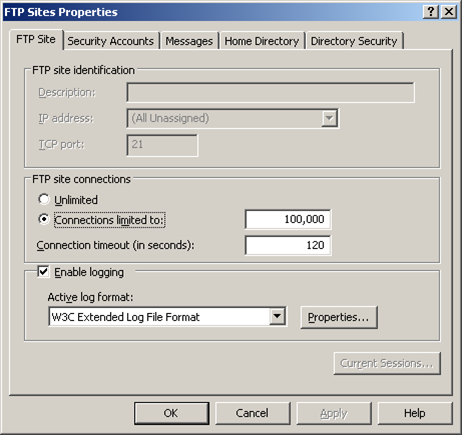
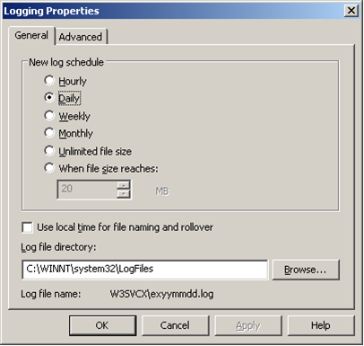
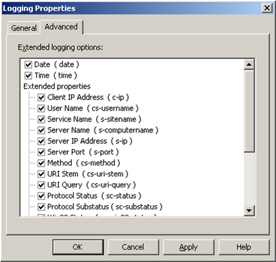
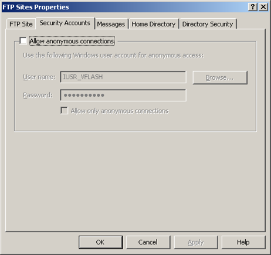

IIS 6.0 FTP Server Installation and Configuration
Translations:
In "Internet Information Services (IIS) Manager" snap-in right-click on "FTP Sites" node and select "Properties".
- Tick "Enable logging" checkbox and make sure "W3C Extended Log File Format" is selected. Enabling of logging in FTP server will provide you with detailed FTP bandwidth statistics in WebsitePanel.
 - Click "Properties..." button.
 - Make sure your "General" settings selection is as on the picture above.
- Click "Advanced" tab
 - Tick all the checkboxes. It will increase the overall size of produced logs, but it will also provide you with more detailed advanced reports.
- Click "OK" to save settings and close the dialog.
- Switch to "Security Accounts" tab.
 - Uncheck "Allow anonymous connections" checkbox.
- You can inspect other tabs of this dialog for further FTP Sites settings.
- Click "OK" button to save your changes and close "FTP Sites Properties" dialog.
Open "Computer Management" snap-in (Click "Start -> Administrative Tools -> Computer Management").
- Expand "Local Users and Groups" node.
- Right-click "Groups" node and select "New Group...".
- Type "WSPFtpUsers" in the "Group name" box and click "OK" button.
- Open Windows Explorer.
- Locate "c:\inetpub\ftproot" folder in the folders tree, right-click on it and select "Properties".
Click "Security" tab and add "WSPFtpUsers" group with default permissions (Read & Execute, List Folder Contents, Read).